This vignette walks through every plotting function
in micropubr. Each returns a ggplot2 object
you can extend with +, share a common set of arguments
(group.by, palette, theme,
plot.title/subtitle/caption,
interactive, return.data,
verbose) and forward extra ... to their
primary geom. For the statistical, machine-learning and genomics
functions see
vignette("stats-ml-genomics", package = "micropubr").
Tip. Pass
interactive = TRUEto any plotting function to get aplotlywidget instead of a static figure — see the Interactive figures section below for live examples.
library(micropubr)
data(GlobalPatterns, package = "phyloseq")
# A lightly filtered subset keeps the examples fast.
gp <- phyloseq::prune_taxa(
phyloseq::taxa_sums(GlobalPatterns) > 5, GlobalPatterns)Alpha diversity
mp_alpha() computes within-sample diversity and, given a
grouping variable, adds the appropriate test automatically. x-axis
labels rotate on their own when groups are many or long, so they never
overlap.
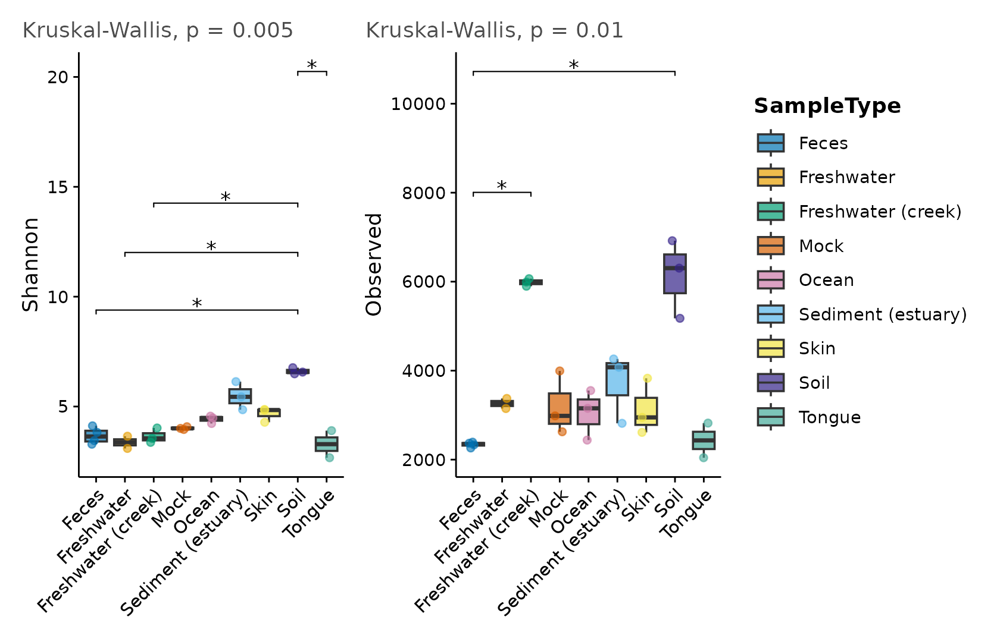
Switch the geometry with plot.type ("box",
"violin", "dot") or draw rarefaction
curves:
mp_alpha(gp, measure = "Shannon", group.by = "SampleType",
plot.type = "violin")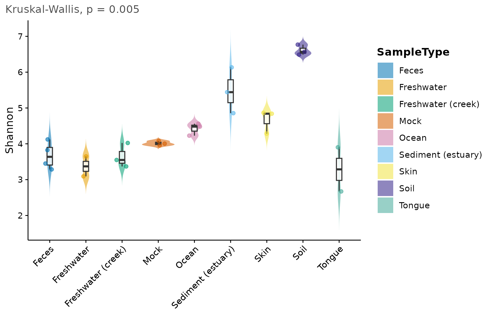
mp_alpha(gp, plot.type = "rarefaction", group.by = "SampleType")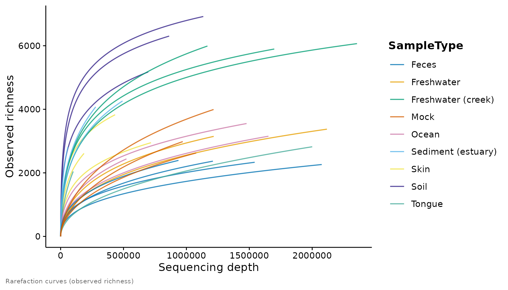
Beta diversity and ordination
mp_ordination() computes the distance, runs the
ordination, draws group ellipses and reports a PERMANOVA in the caption
by default.
mp_ordination(gp, method = "PCoA", distance = "bray", group.by = "SampleType")
The compositional (Aitchison) PCA workflow is one argument away, and
envfit overlays metadata vectors:
mp_ordination(gp, method = "PCA", group.by = "SampleType")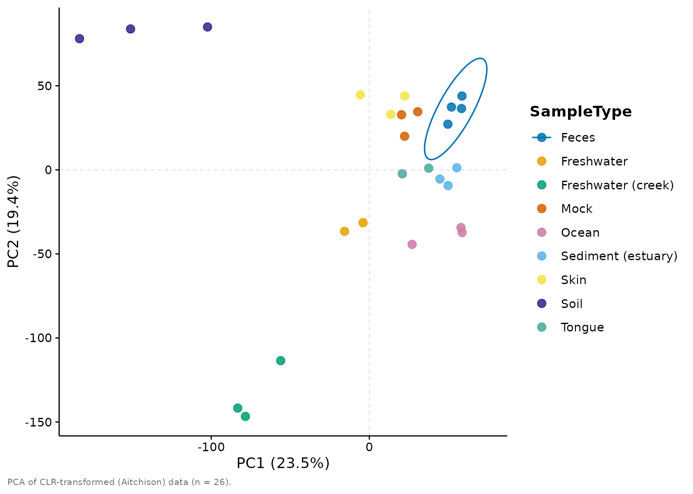
Taxonomic composition
mp_taxa() shows the top taxa at any rank and collapses
the rest into “Other”. It supports "bar",
"area", "heatmap", "bubble" and
"treemap" layouts.
mp_taxa(gp, tax.level = "Phylum", group.by = "SampleType", top.n = 8)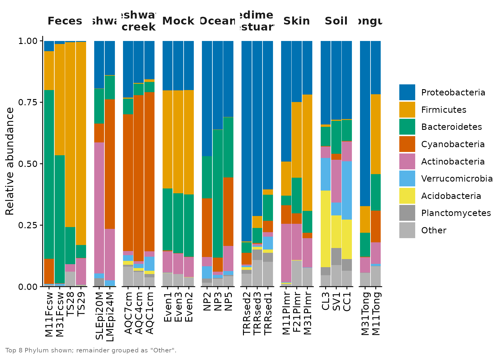
mp_taxa(gp, tax.level = "Phylum", plot.type = "heatmap", top.n = 10)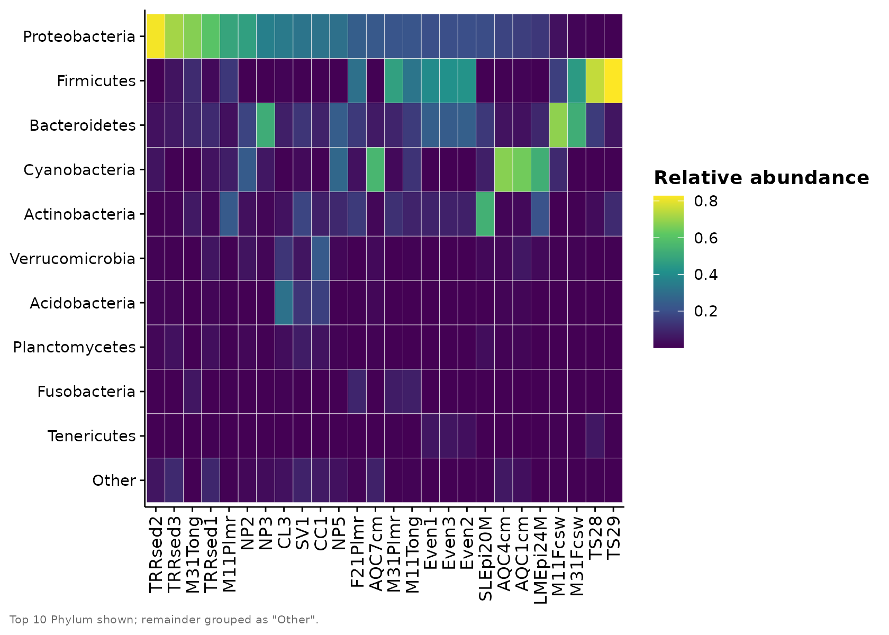
Differential abundance
mp_diff() visualises results from DESeq2,
ALDEx2, ANCOM-BC or any generic table. Here is
a volcano plot from a generic data frame:
set.seed(1)
res <- data.frame(
feature = paste0("ASV", 1:200),
log2FC = rnorm(200, 0, 2),
pvalue = runif(200)^2
)
res$log2FC[1:20] <- rnorm(20, 4, 0.5) * sample(c(-1, 1), 20, TRUE)
res$pvalue[1:20] <- runif(20, 1e-9, 1e-4)
res$padj <- p.adjust(res$pvalue, "BH")
mp_diff(res, plot.type = "volcano", label.top = 8)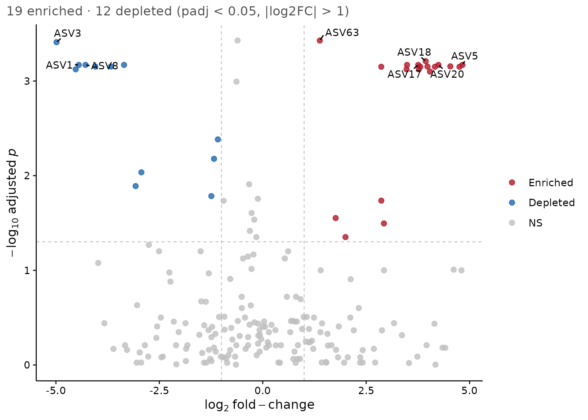
Other layouts include "ma", "forest",
"dot" and "concordance" (to compare two
methods).
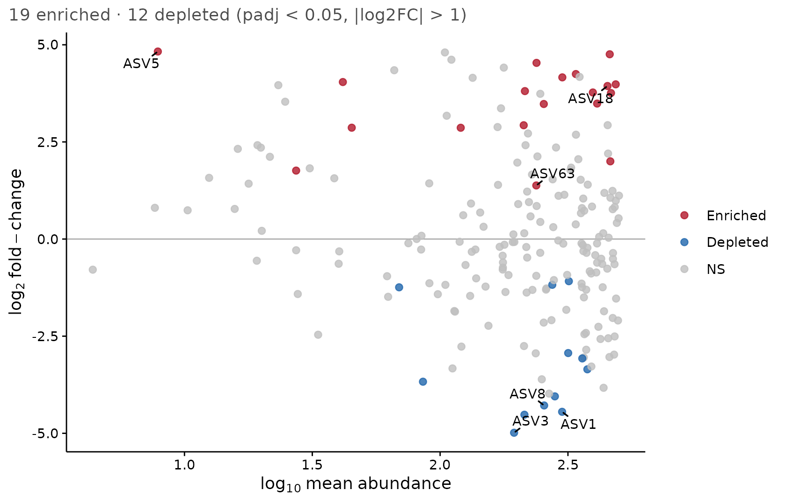
Phylogenetic trees
mp_tree() renders the tree with ggtree,
optionally colouring tips by taxonomy and drawing an abundance ring.
(Requires ggtree/ggtreeExtra.)
Agglomerating to a rank and keeping the most abundant tips
(top.n) keeps the tree and its colour legend legible:
gp_phy <- phyloseq::tax_glom(gp, "Phylum")
mp_tree(gp_phy, layout = "circular", color.by = "Phylum", top.n = 12)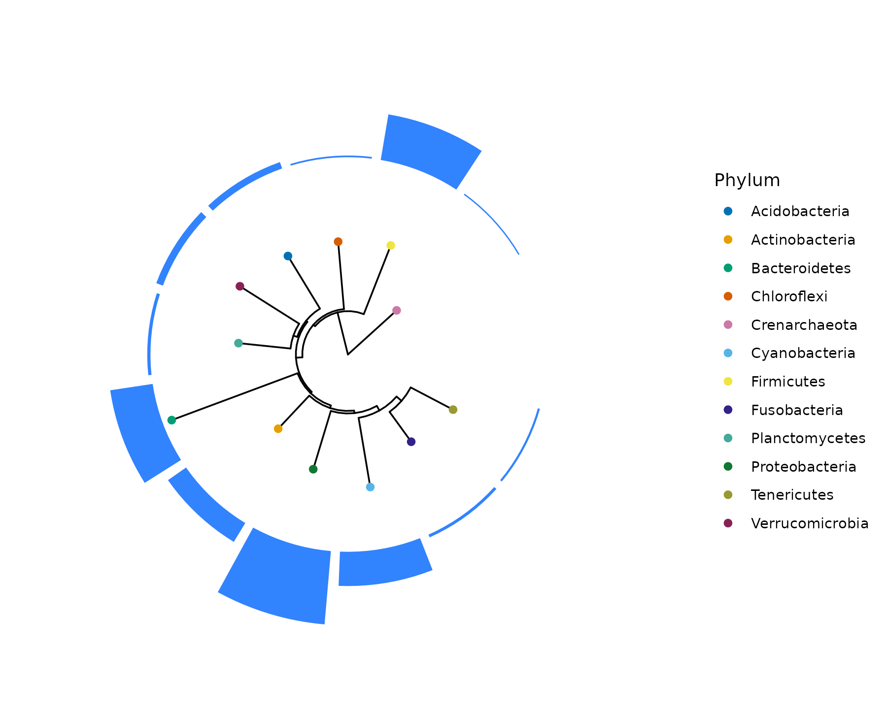
Co-occurrence networks
mp_network() builds a taxon co-occurrence network.
(Requires igraph, ggraph and
tidygraph.)
mp_network(phyloseq::tax_glom(gp, "Genus"), tax.level = "Genus",
top.n = 40, node.color.by = "Phylum")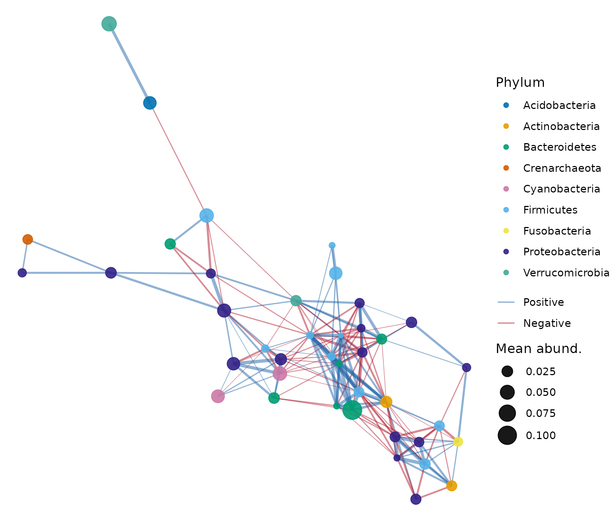
Longitudinal dynamics
mp_longitudinal() shows community change over time. We
build a small synthetic time-series object to demonstrate it.
set.seed(1)
n_taxa <- 12; subjects <- paste0("S", 1:4); days <- c(0, 7, 14, 28)
samples <- expand.grid(Subject = subjects, Day = days)
samples$id <- paste(samples$Subject, samples$Day, sep = "_")
otu <- matrix(rpois(n_taxa * nrow(samples), 50), nrow = n_taxa,
dimnames = list(paste0("ASV", 1:n_taxa), samples$id))
tax <- matrix(paste0("Genus", rep(1:n_taxa)), ncol = 1,
dimnames = list(rownames(otu), "Genus"))
ps_long <- phyloseq::phyloseq(
phyloseq::otu_table(otu, taxa_are_rows = TRUE),
phyloseq::tax_table(tax),
phyloseq::sample_data(data.frame(samples, row.names = samples$id)))
mp_longitudinal(ps_long, time.var = "Day", subject.var = "Subject",
measure = "Shannon", group.by = NULL)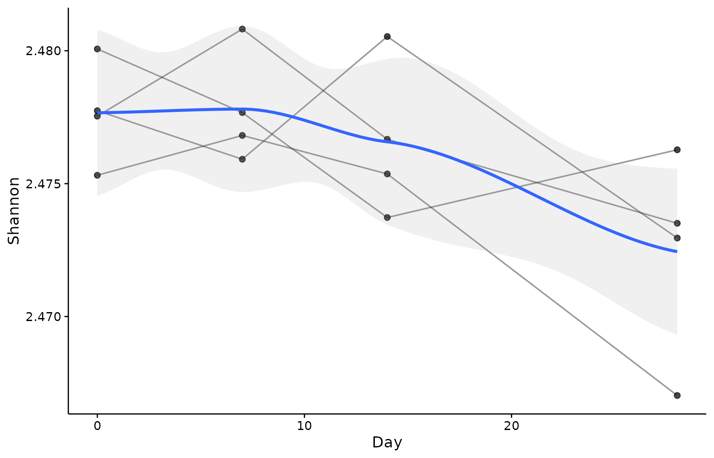
Function / pathway abundance
mp_function() plots a feature-by-sample functional table
(e.g. PICRUSt2 or HUMAnN output) as a heatmap, bar or bubble chart.
set.seed(2)
fn <- matrix(rlnorm(20 * ncol(otu), 3), nrow = 20,
dimnames = list(paste0("K", sprintf("%05d", 1:20)),
colnames(otu)))
mp_function(fn, plot.type = "heatmap", top.n = 15)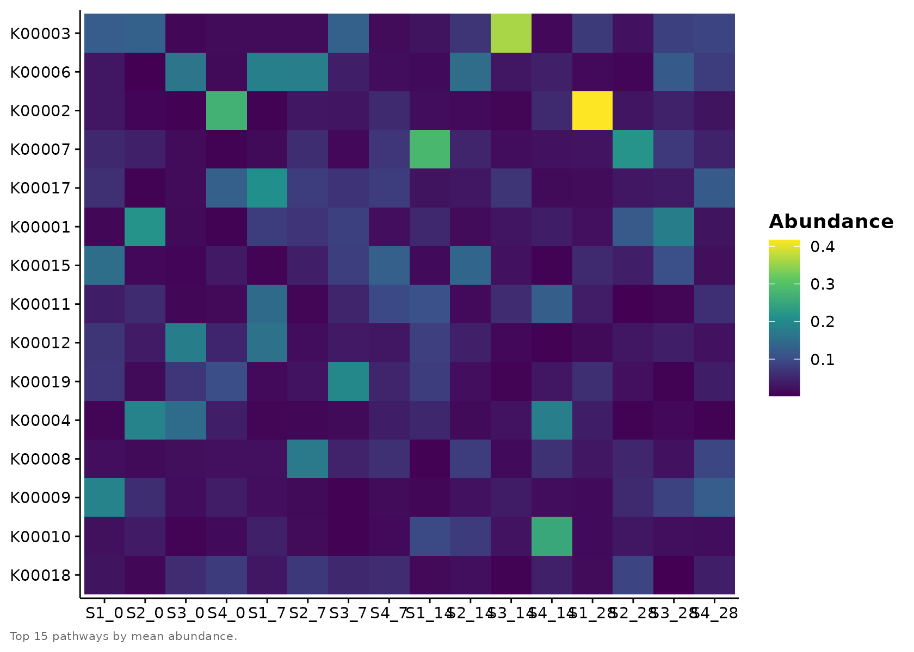
Interactive figures
Every mp_*() plotting function takes
interactive = TRUE, which returns a plotly widget instead of a
static ggplot. The figures below are live:
hover for tooltips, drag to zoom, double-click to reset, and click
legend entries to toggle groups. This requires the plotly
package.
mp_alpha(gp, measure = "Shannon", group.by = "SampleType",
test = "kruskal", interactive = TRUE)The same flag works for ordinations — hover a point to read off its sample and coordinates:
mp_ordination(gp, method = "PCoA", distance = "bray",
group.by = "SampleType", interactive = TRUE)…and for composition bars, where each segment reports its taxon and
relative abundance on hover. (For interactive bars we leave
group.by off: plotly crams faceted strip
labels, so a single per-sample panel reads more clearly.)
mp_taxa(gp, tax.level = "Phylum", top.n = 8, interactive = TRUE)Multi-panel output (several measures, or mp_combine()
figures) is assembled into a single plotly::subplot():
Save any interactive figure as a self-contained HTML page with the
same mp_export() you use for static ones (just give it an
.html name):
w <- mp_ordination(gp, group.by = "SampleType", interactive = TRUE)
mp_export(w, "ordination.html")A couple of caveats worth knowing. Static-only annotations such as
the significance brackets drawn by mp_alpha() are not
reproduced by the conversion (the omnibus test still appears as the
subtitle). And the circular mp_chord() /
mp_circos() figures are drawn with circlize
rather than ggplot2, so they have no interactive mode and
ignore interactive.
Theming and palettes
Every function accepts theme and palette.
The defaults are colourblind safe; swap them freely, or set them once
with mp_set_defaults().
mp_taxa(gp, tax.level = "Phylum", top.n = 6,
palette = "taxa20", theme = mp_theme_nature())
mp_palettes()
#> $diverging
#> [1] "diverging"
#>
#> $qualitative
#> [1] "taxa10" "taxa20" "taxa40" "okabe" "groups2" "groups3" "groups4"
#> [8] "groups5" "groups6" "groups7" "groups8"
#>
#> $sequential
#> [1] "sequential" "viridis"
mp_palette("diverging", n = 7)
#> [1] "#2166AC" "#4F92C3" "#96C3DC" "#F7F7F7" "#F1AE93" "#DA644F" "#B2182B"Composing and exporting figures
Combine panels into a labelled multi-panel figure and export it at a journal column width.
fig <- mp_combine(
mp_alpha(gp, measure = "Shannon", group.by = "SampleType"),
mp_ordination(gp, group.by = "SampleType", permanova = FALSE),
ncol = 2, tag.levels = "A"
)
fig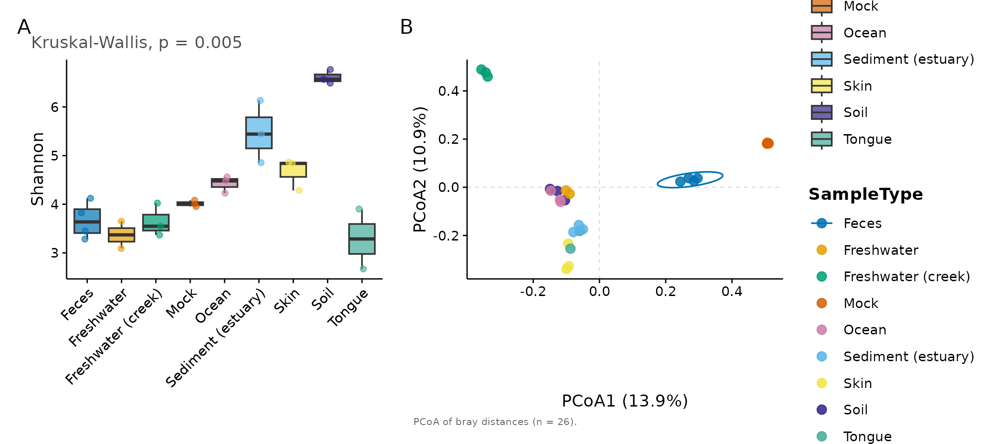
mp_export(fig, "figure1.pdf", column = "double", dpi = 600)